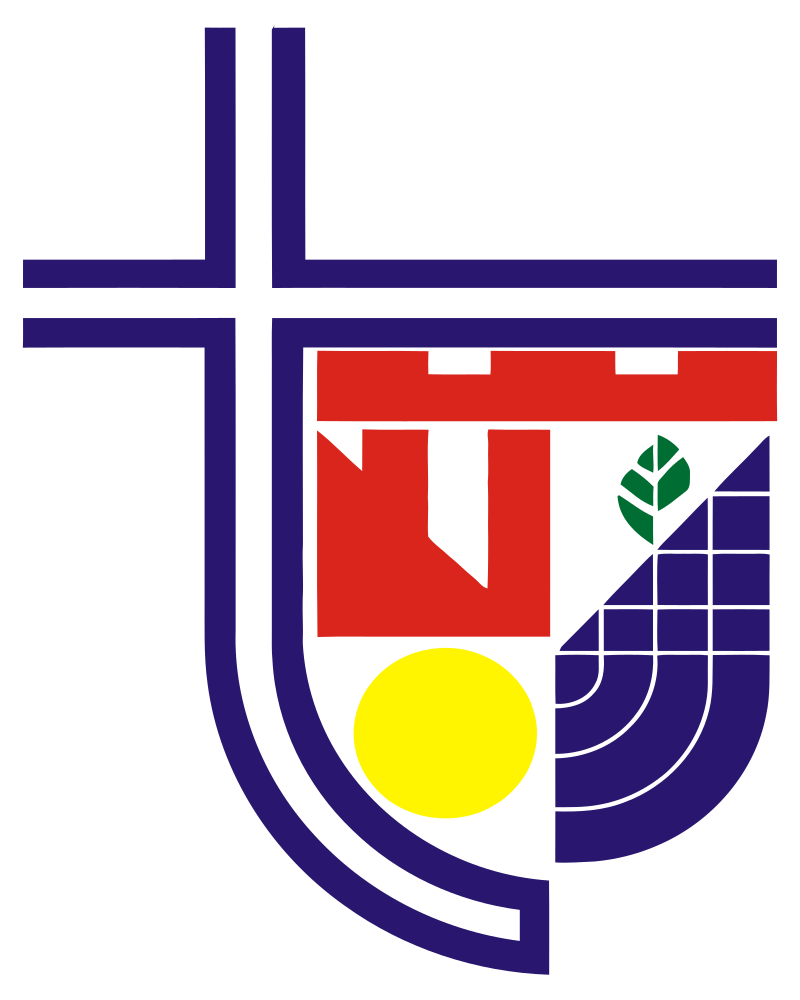

CUSTOMER SERVICE PROFESSIONAL
TM Technology Services Sdn Bhd
2020 – Present
- Addressing corporate customer concerns efficiently and professionally via multiple communication channels.
- Resolving technical issues and escalating complex problems to higher-level support when required.
- Maintaining detailed records of interactions and resolutions using company systems for quality assurance and improvement.
Achievements:
- Earned recognition for consistently exceeding performance metrics, including call resolution time and customer feedback scores.
- Successfully improved customer satisfaction rates by offering timely and empathetic solutions.
- Assisted in onboarding new team members by sharing best practices and training support.

NETWORK TECHNICIAN (INTERNSHIP)
Netive Communication and Telecommunication Solution
Sept 2017 – Dec 2017
- Supported the setup and configuration of network hardware, including routers, switches, and cabling systems.
- Conducted routine network performance checks and identified issues to ensure smooth operations.
- Assisted senior technicians in diagnosing and resolving network connectivity problems for clients.
- Performed basic electrical tasks, such as assembling and wiring power supplies for network devices.
- Documented technical procedures and prepared reports on completed tasks and troubleshooting outcomes.
Achievements:
- Successfully contributed to the deployment of new network installations, ensuring timely completion of projects.
- Learned and applied troubleshooting techniques for network and electrical systems, improving overall technical skills.